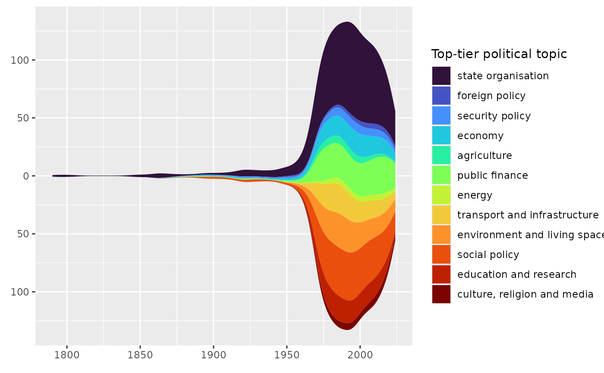
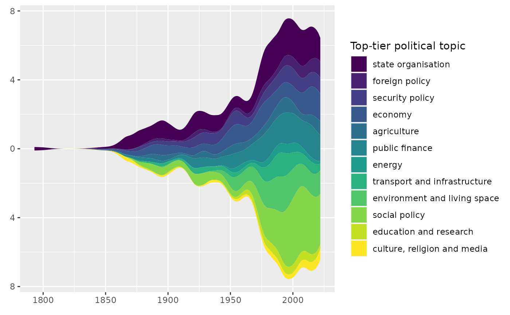
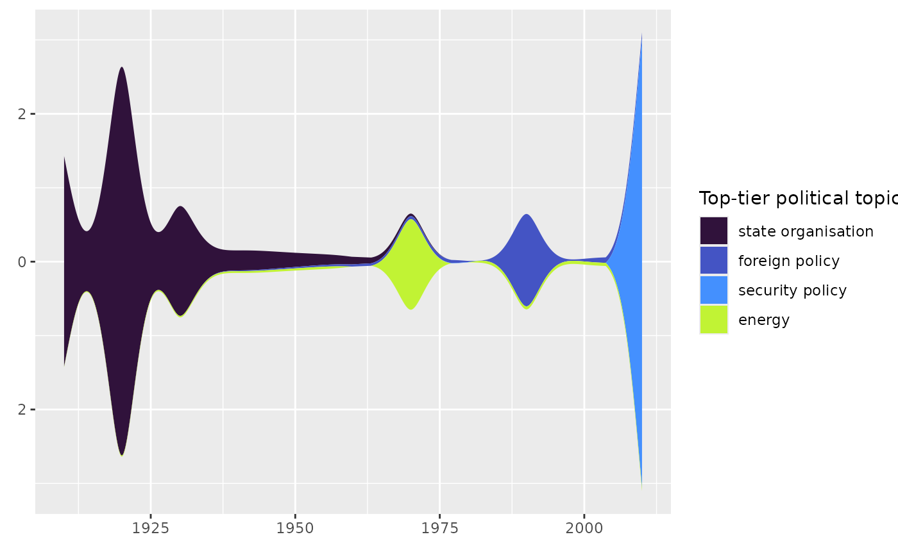
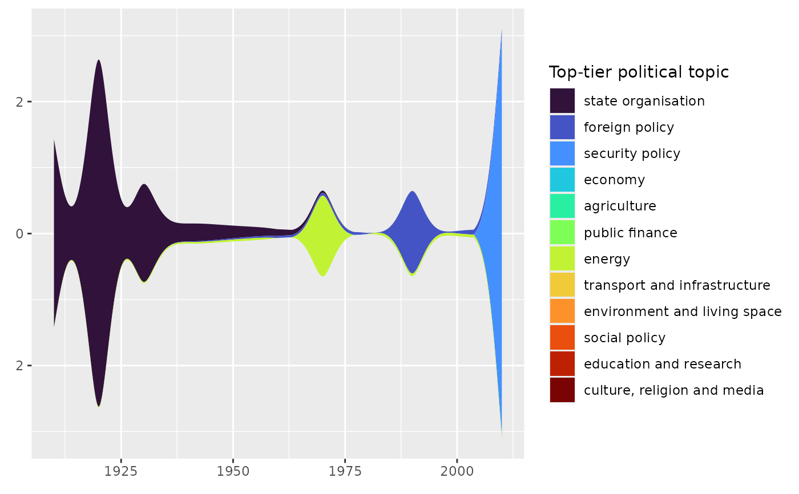

Creates a ggplot2 streamgraph based on ggstream::geom_stream() using the specified period as time
resolution.
Arguments
- data
RDB referendum data as returned by
rfrnds(). A data frame that at minimum contains the column specified inperiodor the columndate(to compute the period column), plus the one(s) specified viaby(if any).- period
Type of period to count referendums by. One of
"week","month","quarter","year","decade"or"century".- by
datacolumn to group by before counting number of referendums.- stacking
Stacking type. One of
"mirror"to stack absolute values symmetrically around the zero line on the x-axis."ridge"to stack absolute values from the zero line on the x-axis upwards."proportional"to stack relative values that add up to 100 %.
- bandwidth
Kernel density estimation bandwidth. A numeric scalar.
- color_palette
Color palette function that when called with a single integer argument returns that many color codes.
- prune_legend
Whether or not to drop
byfactor levels which don't occur indatafrom the legend. Only has an effect ifbyis of type factor.
Value
A ggplot2 object.
See also
Other visualization functions:
plot_rfrnd_share_per_period(),
plot_topic_segmentation(),
plot_topic_share_per_period()
Examples
data_rdb <- rdb::rfrnds(country_code = "CH",
level = "national",
quiet = TRUE,
max_cache_age = "1 year")
rdb::ggplot_streamgraph(data = data_rdb,
period = "year",
by = topics_tier_1)

# you can specify a different color palette
rdb::ggplot_streamgraph(data = data_rdb,
period = "year",
by = topics_tier_1,
color_palette = viridisLite::viridis)

# by default, only factor levels which occur in data are included in the legend
data_rdb <- rdb::rfrnds(country_code = "AT",
level = "national",
quiet = TRUE,
max_cache_age = "1 year")
rdb::ggplot_streamgraph(data = data_rdb,
period = "decade",
by = topics_tier_1)

# but you can include *all* factor levels in the legend if you want
rdb::ggplot_streamgraph(data = data_rdb,
period = "decade",
by = topics_tier_1,
prune_legend = FALSE)
